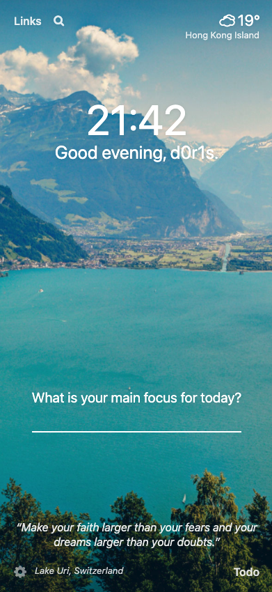

只能说，实现 dark mode 的尽头是手写。
手机 QQ 最近火急火燎地整改，暗黑模式的支持就是其中的一个整改项。由于腾讯课堂在手机 QQ 有一个常驻入口，因此我们也要按照它们的要求实现真正意义上的 dark mode 支持(而不是目前手机 QQ 强制给加的一层灰色蒙层)。
大学时候有个项目也是自己设计和实现的 dark mode 支持，当时是手写的，依稀记得后面从哪些文章里看到说可以一行代码实现暗黑模式云云，于是企图在这次实践过程中应用下这些奇技淫巧，然而经过一天的实践，我发现这些方法有绕不过的坑，最后只得推翻重来手写一把，下面来细说一下。
常见实践
在开始写代码前先 Google 了一下，CSS Tricks 的 A Complete Guide to Dark Mode on the Web 比较推荐阅读，里面写的还挺全的。
开启方式
一般来说会有两种开启方式，一种会在页面(通常右上角)使用一个 switch 开关控制页面是 light 还是 dark，一种会根据系统或者应用的 Preference 来自动切换。
manually toggle
对于手动选择的模式，我们要如何让开关和样式关联上呢？肯定要给这个开关加个事件处理函数了，里面可以去改变页面根元素的类名，通过类名控制样式，如下。
1 | const btn = document.querySelector('.btn-toggle'); |
1 | // 方法 1: 通过改变类，并使用不同的样式 |
1 | // 方法 2: 通过改变类，并使用不同的 CSS 变量 |
也可以去改变加载的样式文件，通过不同的 css 文件来控制样式。
1 | <html lang="en"> |
1 | const btn = document.querySelector(".btn-toggle"); |
1 | /* light-theme.css 文件写一份样式 */ |
1 | /* dark-theme.css 文件写一份样式 */ |
follow system
对于要自动适配系统的模式，我们要如何判断系统的偏好并编写样式呢？一种方法是用 CSS 所支持的 prefers-color-scheme 这个 media query 来包含样式，另一种类似，也是通过对这个 query 的匹配来判断继而添加类名和样式。
1 | /* 通过 media query 直接写 */ |
1 | if (window.matchMedia && window.matchMedia('(prefers-color-scheme: dark)').matches) { |
用户偏好
这个功能其实是有真实的需求的，比如如果我们不记住用户偏好，那么肯定只能有一种默认值，再在加载的过程中判断是偏好 light 或 dark。这种情况下，我们势必会得罪一方(eg. 默认 light 那么对于 dark 偏好的用户来说，肯定会先闪过白色样式再加载到正确的黑色样式，反之亦然)，这种现象叫做 “flash of incorrect theme” (FOIT)。
想要记住用户偏好，可以把这个偏好值存储在 localStorage 里，不过这对于「follow system」的用户来说不适用，总不能给 system preference 添加监听函数，它一改我就去改这个偏好值吧，系统偏好不在我的管辖范围内，在页面设置偏好倒是可行。对于前后端不分离的类型，还可以把偏好值放到 cookie 里，让 server 获取到偏好从而返回对应的 HTML。
奇技淫巧
有一个方法可以一行代码搞定 dark mode，而且乍一看效果还可以。
1 | html { |
解释一下这里的样式，filter 其实是滤镜，它本身提供了很多处理的接口，参考，比如模糊 blur()、灰度 grayscale()、对比度 contrast() 等。
其中 invert 的作用是反转颜色通道数值，接收的值在 0~1。可以把 invert(param) 想象成一个函数 f(value, param) = param * (255 - value) + (1 - param) * value，当 param 为 0 时这个公式退化为 f(value) = value 也就是不变色，当 param 为 1 时这个公式退化为 f(value) = 255 - value。比如一个 rgb(0, 0, 255) 在被套用 invert(1) 后会变成 rgba(255, 255, 0)；一个 rgb(255, 0, 0) 在被套用 invert(0.85) 后会变成 rgb(38, 217, 217)(套公式，0.85*(255-255) + (1-0.85)* 255 = 38.25)，参考。
其中 hue-rotate 的作用是转动色盘，接收的值在 0deg~360deg。这个其实更好理解，如下图是色盘，比如一个纯红色在被套用 hue-rotate(90deg) 后会变成绿色，相当于我的取色点针顺时针转了 90°，具体的计算和矩阵运算相关，参考。感觉这个转换还蛮复杂的，参考stackoverflow 的讨论，还有个将 black 通过 filter 转换成想要颜色的工具。

在二者叠加的效果下，就会有很神奇的暗色模式了。但我们可以很明显地看到，这里的图片也被反色了，这不是我们预期的效果，一个常见的做法是给 img 标签再使用这个 filter 给反回去，它是生效的，如下图。
1 | html { |
PS: 对于 invert 非 1 的，无法通过两次 revert 来反转到初始值，参考。
暗黑模式の坑
根据目标色反推源头色
问题
如果要在实践中使用 filter 来实现暗黑模式，那么我们就不需要给各种 color 设置偏黑色的，而是用原始的偏白色颜色，因为这样套用 filter 自然就会变黑。想要达到目标样式，只需要设置一个特定的偏白色，让这个色通过 filter 后呈现目标样式就行(目标颜色在设计稿里)。那么问题来了，我要怎么根据设计稿里的偏黑颜色，去反推我要设置的偏白初始值呢？解决
聪明的我想到了一种方法，就是反其道而行之。先把目标值设为某个元素的 color，给整个页面加个 filter，用取色器应用(无法用 chrome devtools 的取色器噢！)来取当前的颜色，这个颜色是不是就是我们需要的呢？果不其然，的确如此。不过随着实验越多，我发现黑白这一类的可以得到正确的颜色，但是彩色的貌似不是这么容易就能推出来的。
这里取色还要注意下，电脑和外接显示屏不一样。
通过 background url 设置的图片无法反色
- 问题
像下面的例子，即使加了上面的样式，还是没法反色。

- 原因
首先是因为这种方法设置图片的元素，无法通过 img 标签选择到(那是自然！)，且有个规定，对于设置了 background 属性的选择器，在其中写的 filter 属性是完全不生效的，参考。解决办法要么把这些都换成 img，要么用 hack 一些的加伪元素的方法，不过前者不太现实，后者不太方便。单就这一个问题就可以否决掉 filter 的方案了。
filter 影响其他元素
问题
给 #react-body 元素添加 filter 后，首页的顶部固定搜索框、底部固定 tab 栏、引导下载 app 的横条，都消失不见了。
原因
搜了好多问题，终于通过一篇被搬运的文章发现了问题所在(感谢这篇文章！)，原因是 filter 属性会影响 fixed 的组件，因为它会给 absolute 和 fixed 的元素添加一个 containing block，除非这个被添加 filter 的元素是 document 的根元素(也就是 html 元素)，否则 fixed 和 absolute 相对的位置就不对了。fixed 的元素会相对于使用了 filter 的元素来定位，而不是相对于视口 viewport，解决办法有两种，要么把 filter 只设置在 html 元素上来避开，要么针对每个 fixed 元素套一个 container，只给这个 container 使用 filter，参考。
直出页面无法设置 dark mode 类名
问题
在调试的时候，发现某个直出页面大体颜色都正常，但有两个模块颜色不对劲。解决
排查到原因在于，这个 Container 中有两个子组件少了dark-mode的类名。但是这几个组件都是同样的判断条件和传递 props 方式，为什么会有的带上了正确的类名，令人百思不得其解。
后面再思考下，有可能是因为 props 不行，如果我把 props 改成 state 呢？实践后发现可行，也就是在 constructor 中设置一个 isDarkMode 的值为false，在 componentDidMount 的时候去设置 isDarkMode 的值为!!this.props.isDarkMode。但如果我在 constructor 中就设置!!this.props.isDarkMode就会不生效，为什么呢？
原因在于我们对系统偏好的判断，是通过window.matchMedia来的，这个在直出的 server 端必然获取不到，这里我们 server 返回的 html 字符串就是错误的。当页面返回到 client 这边，加载的 js 会执行各种生命周期函数，componentDidMount 这里的 setState 值和 constructor 中的初始 state 值是一样的，就不会触发 update，就会直接使用我们错误的 html 字符串对应的页面。因此会显示错误。
其他の坑
require
不能传递变量否则会 module not found。
linear-gradient
原来只能用到 background / background-image 里面，不能用在 background-color 里。
z-index 和 opacity 相互影响
问题
有个按钮元素原本有个 z-index，当我给这个按钮额外设置一个 opacity 时，它在电脑上表现正常，手机连接本地也正常，但在手机的 nohost 情况下，发现这个按钮直接消失了。解决
仔细看才发现，原来还是隐约能看到按钮的，但是它貌似在更底部。怀疑是 opacity 和 z-index 相互影响？查了下，原因在于「层叠上下文」和「层叠水平」。
首先，一个文档流中有许多层叠上下文。
- 页面根元素天然具有层叠上下文
- z-index 为数值(非 auto 就行，0 也可以)的定位元素(设置了 position 就行，relative 也可以)有层叠上下文
- 设置某些 CSS3 属性的元素，包括
z-index非auto且父元素是display: flex | inline-flex的元素opacity非1的元素、transform非none的元素mix-blend-mode非normal的元素、filter非none的元素isolation非isolate的元素will-change指定的属性值为上面任意一个的元素-webkit-overflow-scrolling为touch的元素
其次，在层叠上下文内部遵循一定的层叠优先级顺序，从底部到顶部应该如下。
- 层叠上下文的 background / border
- 负数 z-index 元素
- block 元素
- float 元素
- inline / inline-block 元素
- z-index 为 auto / 0 的元素，不依赖 z-index 的层叠上下文
- 正数 z-index 元素
而且，层叠上下文之间也遵循一定的规则。
- 层叠上下文的层叠水平要比普通元素高
- 层叠上下文可以嵌套，内部层叠上下文及其所有子元素均受制于外部层叠上下文，相当于比较时外层才是决定性的
- 层叠上下文和兄弟元素独立，不影响兄弟的层叠水平
层叠上下文内部及层叠上下文之间有通用的规则。
- 同一个维度比较时，z-index 越大越靠近用户
- 层叠水平一致时，在文档流后面的会覆盖前面的元素
说了这么多，具体原因我其实还是不算太懂，明明这个 button 之前通过 z-index 创建了上下文，后面通过 opacity 也创建了上下文，为什么都有高优先级，但是展示出在文档流中的位置不一样呢？难道是和父层叠上下文元素中的其他元素有层叠顺序的变化吗？不太确定，这个有点难以理解。
一个解决办法是不用 opacity，用 rgba 的 background-color。
PS：参考资料
- What No One Told You About Z-Index
- 深入理解CSS中的层叠上下文和层叠顺序
- 4 reasons your z-index isn’t working and how to fix it
flex 元素下空子元素导致间距不对
问题
有些组件用到了 flex，justify-content 设置了 space-between，但我发现里面的元素间距在视觉上貌似不一样，才发现是因为有个空的 div，它在视觉上没有内容，但却在 flex 元素内，导致它周围元素看上去有更大的间距。解决
原来有个 empty 伪类，可以把 empty 的 div 给隐藏，好东西！参考。1
2
3div:empty {
display: none;
}
调用 extended 组件的生命周期函数
问题
某个组件需要通过 props 设置 state，默认值在 constructor 中设置，正确值在 componentDidMount 里设置。这个组件我们使用的话是用 lib，它的 lib 里有一个已有的 componentDidMount 方法，它的 isomorph 里有一个 render 方法。现在我要设置 state 来改 render，必然是改 isomorph 了。那问题来了， isomorph 里有我想要的 componentDidMount，lib 里也有它本来自己写的 componentDidMount，我们使用的话是 lib，怎么在 lib 的 componentDidMount 里也调用 isomorph 的 componentDidMount 呢？解决
参考。1
2
3
4
5
6
7
8
9
10
11
12
13
14
15
16
17
18
19
20class Animal extends React.Component {
constructor(props) {
super(props);
}
componentDidMount() {
console.log('Parent mounted.');
}
render() {
return (<div>{this.props.animalType}</div>);
}
}
class Dog extends React.Component {
componentDidMount() {
super.componentDidMount();
console.log('Child mounted.');
}
}
根据 props 设置 state
问题
想要把外部传递的 props 给作为当前组件的 state。解决
1
2
3
4
5
6
7
8
9
10
11
12
13
14
15
16
17
18
19// class 类组件
// 参考：https://stackoverflow.com/questions/40063468/react-component-initialize-state-from-props
class ExampleComponent extends React.Component {
constructor(props) {
super(props);
this.state = {
exampleState: this.props.exampleProps
};
}
}
// function 类组件
// 参考：https://stackoverflow.com/questions/54865764/react-usestate-does-not-reload-state-from-props
function Example = (props) => {
const [example, setExample] = React.useState({...props.example});
React.useEffect(() => {
setExample(props.example);
}, [props.example])
}